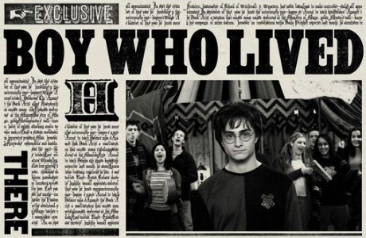
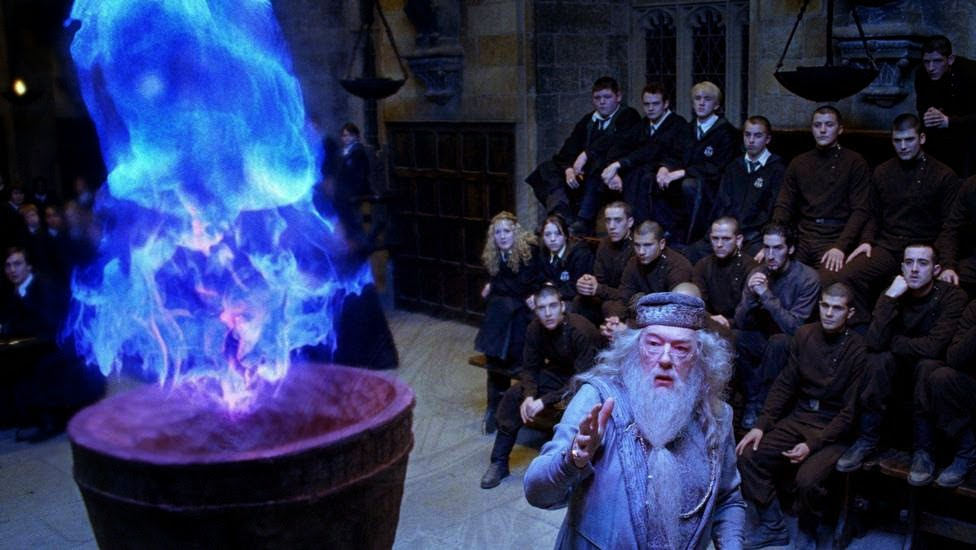

P R I N C I P A I S . N O T I C I A S . D O . M U N D O . B R U X O . A
O . S E U . A L C A N C E
Aquele-que-Não-Deve-Ser-Nomeado
Ele realmente voltou ?

O garoto que mente
Harry Potter fala a verdade ou apenas esta inventando descupas para o que ocorreu?
Aluno é morto ao participar do Torneio Tribruxo.
Cedrico Diggory (setembro/outubro de 1977 – 24 de junho de 1995) foi
um bruxo britânico filho de Amos Diggory. Ele começou a frequentar a
Escola de Magia e Bruxaria de Hogwarts em 1989, sendo classificado
para a Casa Lufa-Lufa. Durante seu tempo escolar, Cedrico foi monitor
e capitão do time de sua casa, jogando como apanhador. Em seu sexto
ano, ele apresentou seu nome para competir no Torneio Tribruxo.

D e s v e n d a d o . o . m i s t é r i o
Bartolomeu Crouch Jr.sabotou o calice para que Harry Potter
participasse do torneio, o motivo ainda é desconhecido.